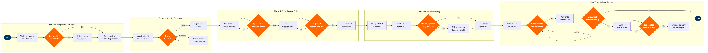

Baggage Acceptance & Handling
Ground Operations & Airport Services › Baggage Operations · 17 L4 steps · 5 phases · 4 decision gates · Updated 2026-10-01 20:52
📊
Process Flow Diagram (BPMN)

📋
L4 Process Steps
| Step | Step Name | Role / Swim Lane | System | Input | Output | KPI | Dec? | Exc? |
|---|---|---|---|---|---|---|---|---|
Phase 1 1.1 |
Verify passenger allowance in PSS | Check-in Agent | Amadeus Altéa PSS | Passenger PNR, ticket class, frequent flyer tier | Baggage allowance entitlement confirmed; excess fee notification triggered | Allowance lookup time ≤10 sec; fee notification accuracy ≥99% | N | Y |
| 1.2 | Weigh and measure baggage at counter | Check-in Agent | SITA Common Use Terminal Equipment (CUTE) with integrated scale | Passenger-presented baggage | Weight and dimension record; excess baggage charge calculated | Average bag acceptance time ≤90 sec per bag; scale accuracy ±0.1 kg | Y | Y |
| 1.3 | Collect excess baggage fees | Check-in Agent | Amadeus Altéa PSS / payment terminal | Excess weight or piece determination from step 1.2 | Fee collected and recorded in PNR; EMD (Electronic Miscellaneous Document) issued | Excess fee collection rate ≥98% of chargeable bags | N | Y |
| 1.4 | Print bag tag and transmit BSM | Check-in Agent | Amadeus Altéa PSS / SITA BagMessage | Confirmed weight, destination, passenger itinerary | IATA 10-digit barcode bag tag affixed; Baggage Source Message (BSM) transmitted to BHS and destination airport | BSM transmission accuracy ≥99.5%; BSM delivery to BHS ≤5 sec | N | N |
Phase 2 2.1 |
Induct bag into automated EDS screening | Baggage Systems Operator | Smiths Detection CTX / L3 ProVision Explosive Detection System (EDS) | Tagged bag inducted onto inline conveyor belt with BSM | Bag inducted into screening lane; screening initiated | Screening throughput ≥1,200 bags/hr per lane; induction reject rate ≤0.5% | N | N |
| 2.2 | Evaluate automated threat detection result | TSA Screening Officer | Smiths Detection EDS console / L3 Technologies automated threat recognition (ATR) | CT scan image and ATR algorithm output | Clear or Suspect determination; bag status updated in screening system | Automated clear rate ≥85%; false-positive rate ≤12% | Y | Y |
| 2.3 | Conduct manual bag search and resolve status | TSA Screening Officer | TSA PARIS (Passenger and Baggage Reconciliation) / SITA WorldTracer | Suspect bag flagged by ATR; passenger paged if required | Cleared, held, or offloaded determination; bag status updated; airline notified | Manual resolution time ≤15 min per bag; offload-to-notification time ≤5 min | N | Y |
Phase 3 3.1 |
Sort bag to destination make-up area via BHS | Baggage Systems Operator | SITA BagManager / Airport BHS (Vanderlande BAGTRAX / Siemens automated sorter) | BSM data, flight departure time, make-up area assignment | Bag routed to correct make-up carousel or transfer belt | Sortation accuracy ≥99.7%; late bags to make-up ≤1% of total | Y | Y |
| 3.2 | Build ULD or loose-load baggage cart | Ramp Agent / Loader | SITA BagManager / Amadeus LoadPlanner | Sorted bags arriving at make-up area; ULD build plan from load controller | Loaded ULD or baggage cart with physical manifest; weight estimate recorded | ULD build completion ≥30 min before scheduled departure; weight estimate variance ≤2% | N | Y |
| 3.3 | Reconcile bag count against active PAX list | Ramp Supervisor | SITA BagManager / Amadeus Altéa Departure Control System (DCS) | Loaded ULD manifest; active (boarded + checked-in) passenger list | Bag count confirmed or discrepancy flagged for investigation | Pre-load reconciliation accuracy ≥99.5%; discrepancy resolution time ≤10 min | Y | Y |
Phase 4 4.1 |
Transport ULDs and carts to aircraft | Ramp Agent / Tug Driver | SITA Airport Management System (AMS) / Ramp Resource Management | Departure time, gate assignment, confirmed ULD manifest | ULDs delivered to aircraft within loading window | Bags at aircraft ≥25 min before scheduled departure; tug utilisation ≥80% | N | Y |
| 4.2 | Load baggage into aircraft hold per W&B plan | Loader / Ramp Agent | Jeppesen LoadPlanner / Ultramain Weight & Balance System | ULD manifest, aircraft hold configuration, W&B loading sequence | Bags loaded per load plan; hold positions recorded; loading confirmation sent to load controller | Hold loading complete ≥15 min before departure (D-15); W&B CG within ±1% of plan | N | Y |
| 4.3 | Reconcile loaded bags and offload no-shows | Load Controller / Ramp Supervisor | SITA BagManager / Amadeus Altéa Departure Control System (DCS) | Final loaded bag count; departure passenger list (after boarding gate closes) | Load sheet signed off; no-fly bags identified and physically offloaded; NOTOC updated | 100% reconciliation before door closure; unaccompanied bag offload ≤10 min from identification | N | Y |
Phase 5 5.1 |
Offload baggage from aircraft on arrival | Ramp Agent / Loader | SITA Airport Management System (AMS) / SITA BagManager | Aircraft block-in confirmation; hold manifest | All bags offloaded; scan event logged per IATA Resolution 753 4-point tracking requirement | First bag on belt ≤20 min from block-in (domestic); ≤25 min (international) | N | Y |
| 5.2 | Deliver bags to assigned baggage claim belt | Baggage Hall Operator | SITA BagManager / Airport BHS claim belt controller / FIDS | Offloaded bags; belt assignment from airport ops; flight arrival data | Bags on reclaim belt; passenger belt notification displayed on FIDS | Last bag on belt ≤35 min from block-in; on-time belt delivery rate ≥92% | N | Y |
| 5.3 | Identify and file PIR for mishandled bags | Baggage Services Agent | SITA WorldTracer / Amadeus Altéa PSS | Unclaimed bags at belt; passenger self-report; gap in IATA Resolution 753 scan trail | Property Irregularity Report (PIR) filed in WorldTracer; passenger notified with file reference | PIR filing time ≤10 min from passenger report; mishandling rate ≤5 per 1,000 passengers (IATA industry target) | N | Y |
| 5.4 | Trace, recover and return mishandled baggage | Baggage Tracing Agent | SITA WorldTracer / baggage delivery partner (Deliver.com / BagsVIP) | PIR record; scan history; last-known location from BagManager | Bag located; delivery to passenger arranged; WorldTracer case closed | 80% of mishandled bags returned within 24 hrs; permanently lost bag rate ≤0.5 per 1,000 passengers | N | Y |
📋